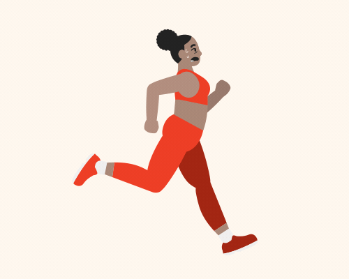
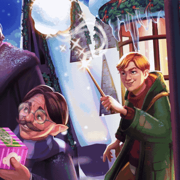
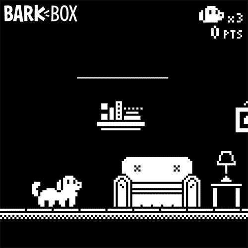
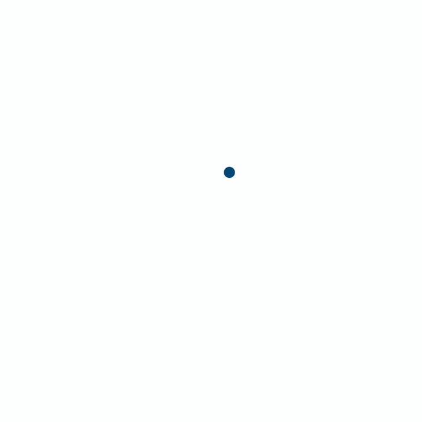
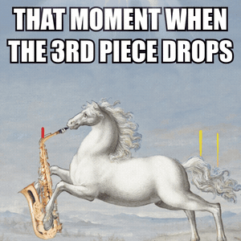
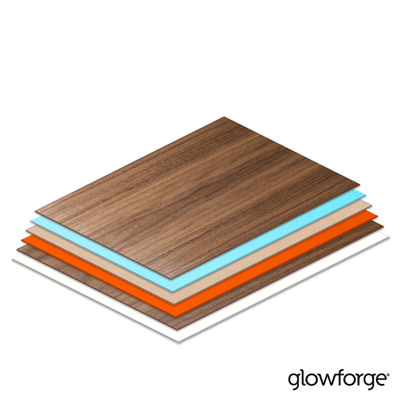
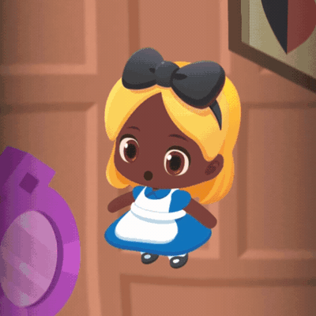
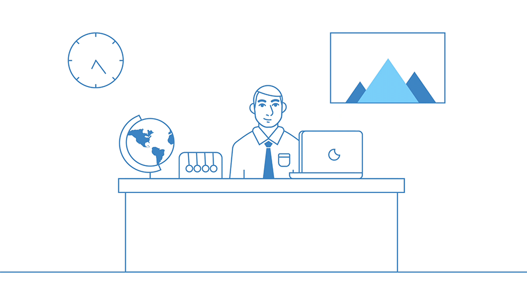

Role: Animator, Motion Designer
In addition to working as a writer, designer, and illustrator, I'm also a self-taught animator and motion designer. Below you'll find a selection of the motion graphics projects I've been lucky enough to work on — from iterative animation for paid social assets and bespoke explainer videos, to AR filters, looping GIFs, and original character animation.
Clients include Noom, Jam City, Bark, Glowforge, Praytell, Giphy, and more.
Selected Projects

Noom
Paid social motion and design — animated spots for one of the most recognizable names in health and wellness.

Harry Potter: Hogwarts Mystery
Motion design for Jam City's beloved mobile game — holiday spots, events, and promotional creative.

BarkBox
A full motion design practice at Bark — social ads, character animation, and AR filters including a face-controlled micro-game.

Bright Dental
Storyboarded, designed, and animated a full explainer video for Bark's dental brand — featuring three original enzyme characters.

Cookie Jam
Goofy, high-energy social spots for another extremely cute Jam City mobile game.

Glowforge
Paid social motion design for the laser cutter that makes creating things feel like magic.

Disney: Pop Town
Social creative for the soft launch of Jam City's incredibly adorable Disney mobile game.

VMOX
A full explainer video built from scratch — storyboards, design, and animation, entirely in After Effects and Illustrator.
Loops & GIFs
A collection of looping animations made over the years — for BuzzFeed, Twitch, Giphy, the Grammys, Muttville, and personal work.